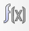
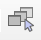
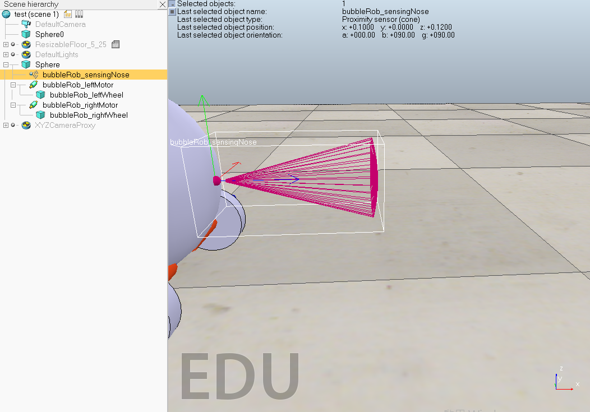
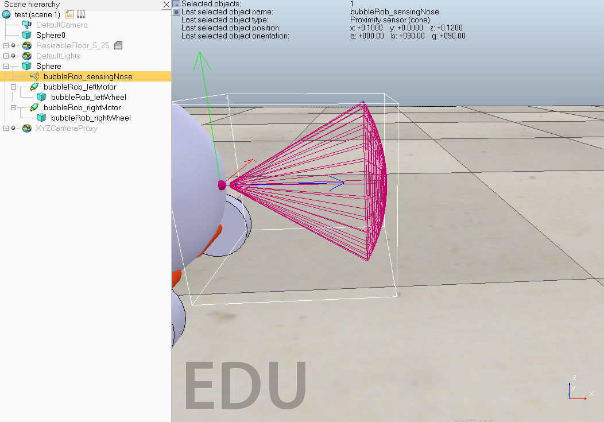

V-rep

V-rep的操作手冊:
http://www.coppeliarobotics.com/helpFiles/
V-rep Tutorial:
http://www.coppeliarobotics.com/helpFiles/en/tutorials.htm
BubbleRob tutorial:
http://www.coppeliarobotics.com/helpFiles/en/bubbleRobTutorial.htm
內容簡介
在創建Sphere時，要取消create dynamic and respondable shape 要是沒取消的話，Sphere會是dynamic(☑Body is dynamic)，會利用上面的Bullet2.78 engine去執行。
V-rep本身沒有dynamic分析的能力。
把要放入機器人的機械或元件寫成model，這樣才會有版本可言。
操作方式
可開啟數學計算式，裡面的Collision跟Distance是Bubble Rob所具備的東西。
 可平移物體的x,y,z軸。
可平移物體的x,y,z軸。
 可旋轉物體的方向。
可旋轉物體的方向。
可調整視角。
 開啟當下選擇的物體的設定欄。
開啟當下選擇的物體的設定欄。
↪Simulation Setting➔At simulation end➔☑Reset scene to initial state(回到最初的位置)
快點Sphere前面的方格兩下➔Shape➔View/modify geometry(可調整物體大小)
快點Sphere前面的方格兩下➔Shape➔Adjust color➔Ambient/diffuse component(可調色)
快點Sphere前面的方格兩下➔Common➔☑Object is model base(變成model)
快點Sphere前面的方格兩下➔Common➔☑Object/model can transfer or accept DNA(model可用程式輸入)
Cone Proximity Sensor
Menu bar➔add➔proximity sensor➔cone type就可以創建一個錐形的接近傳感器。

設定proximity sensor➔快點前面的圖示兩下➔Show volume parameters➔可調整
➔Offset(偏移)

➔Range(範圍)

➔Angle(角度)

設定proximity sensor➔快點前面的圖示兩下➔Show detection parameters
➔把Don't allow detections if distance smaller than的打勾取消掉，這串字的意思是如果距離小於此時則不允許檢測。
實習任務二 << Previous Next >> v-rep 設計動態模擬